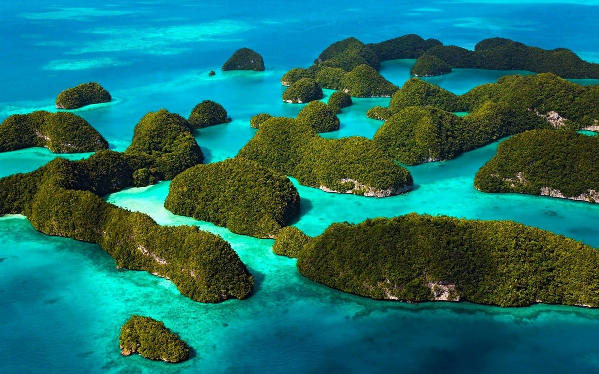
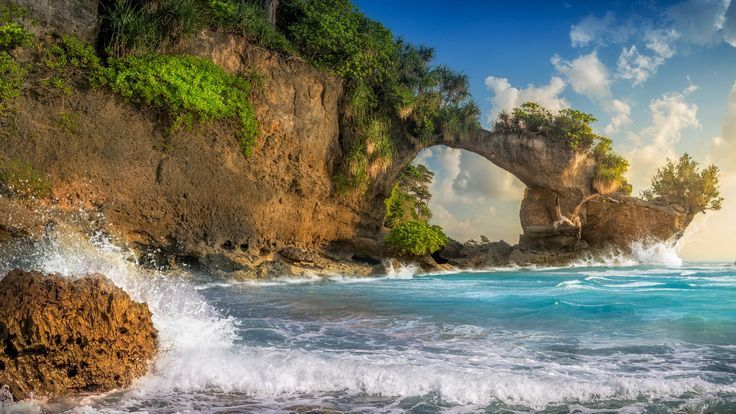
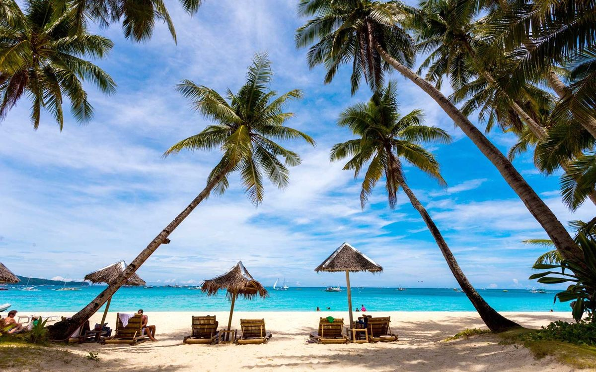
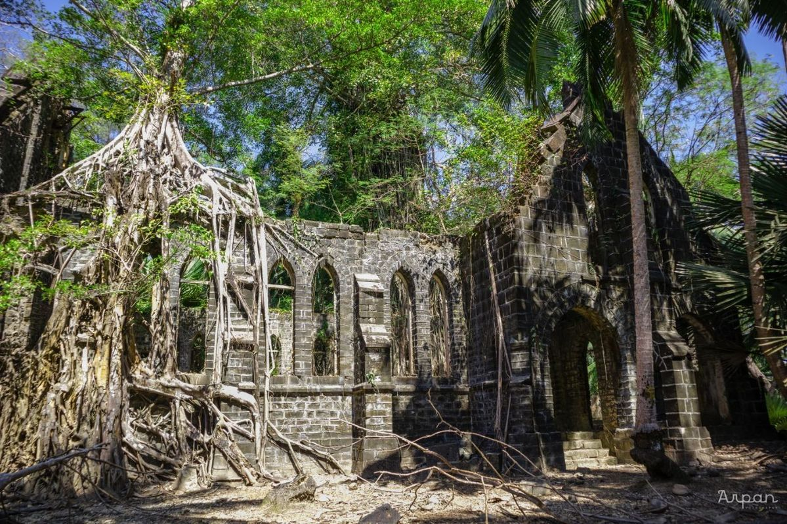
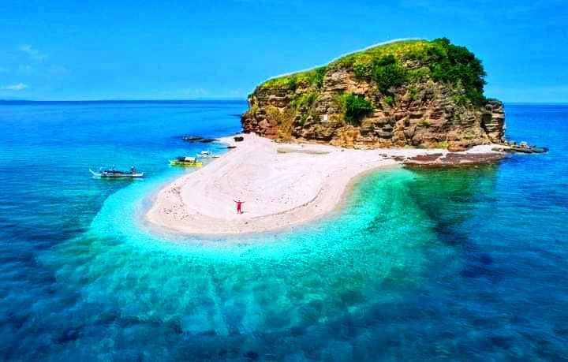
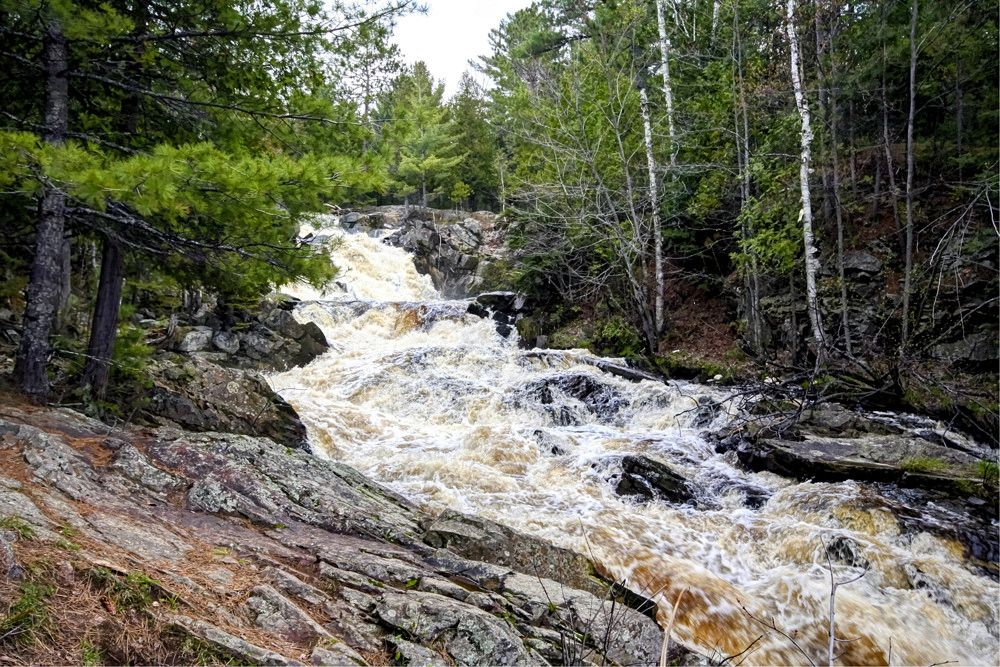
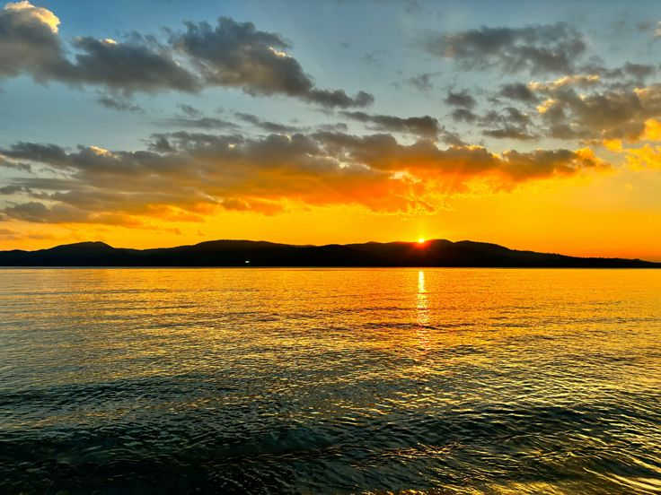
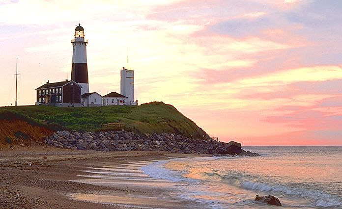

Where turquoise waters meet untouched paradise
The Andaman & Nicobar Islands are a rare blend of untouched natural beauty, deep history, and slow island living. Far from crowded tourist hubs, the islands offer crystal-clear turquoise waters, powdery white beaches, dense tropical forests, and vibrant coral reefs teeming with marine life. Andaman is not just a destination—it’s an experience. Days here move gently, guided by ocean tides and golden sunsets. Adventure seekers are drawn to scuba diving, snorkeling, and sea walking, while peace seekers find solace in quiet beaches and island ferries gliding over calm waters. Beyond its natural charm, Andaman holds stories of India’s past—from the historic Cellular Jail to indigenous cultures that have lived in harmony with nature for centuries. Whether you seek romance, adventure, reflection, or escape, Andaman offers a timeless journey where nature takes the lead.

Famous for Radhanagar Beach, turquoise waters, and world-class scuba diving, Havelock is the heart of Andaman tourism.
EXPLORE
A quiet and scenic island known for natural rock formations, coral reefs, and peaceful beaches ideal for slow travel.
EXPLORE
The capital city of Andaman, home to the historic Cellular Jail, museums, markets, and a gateway to nearby islands.
EXPLORE
A hauntingly beautiful island with colonial ruins, deer, peacocks, and a glimpse into Andaman’s historical past.
EXPLORE
Known for limestone caves, mangrove creeks, and mud volcanoes, Baratang offers a raw and adventurous side of Andaman.
EXPLORE
A hotspot for snorkeling and sea walking, North Bay is perfect for close encounters with coral reefs and marine life.
EXPLORE
Famous for breathtaking sunsets and lush greenery, Chidiya Tapu is a peaceful retreat away from the city crowds.
EXPLORE
A hidden gem in Andaman, Long Island offers secluded beaches, forest trails, and a quiet island lifestyle.
EXPLORE
October to May
It is the best time to visit Andaman,
offering pleasant weather, calm seas, and excellent visibility for water activities.